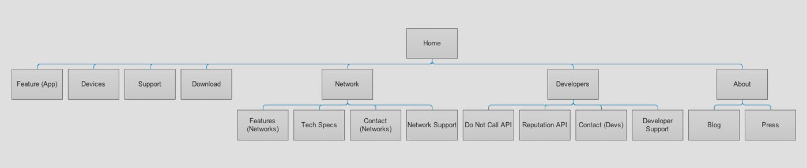
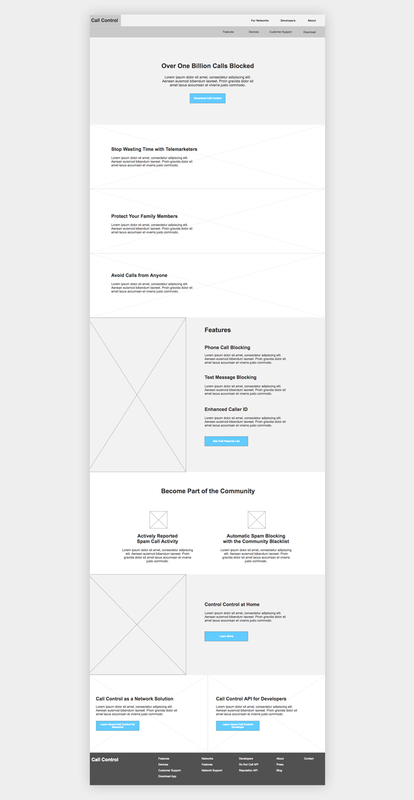
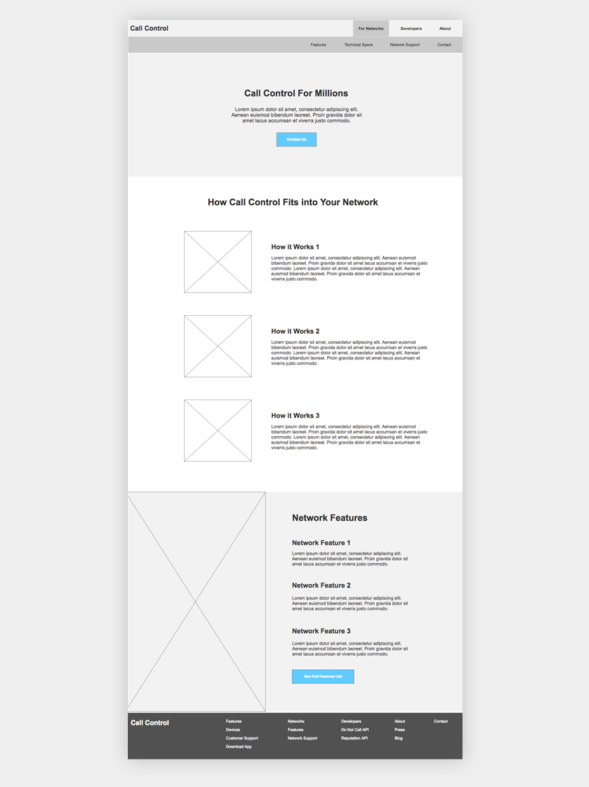
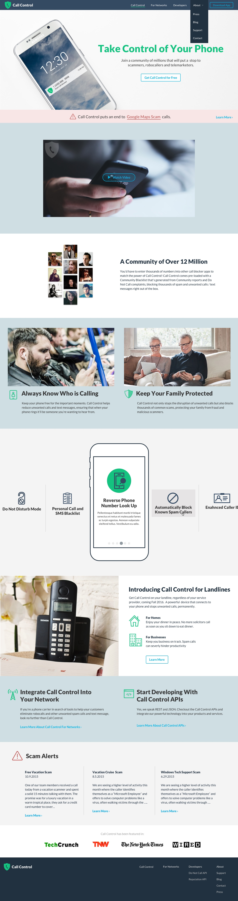
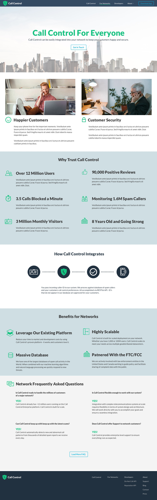
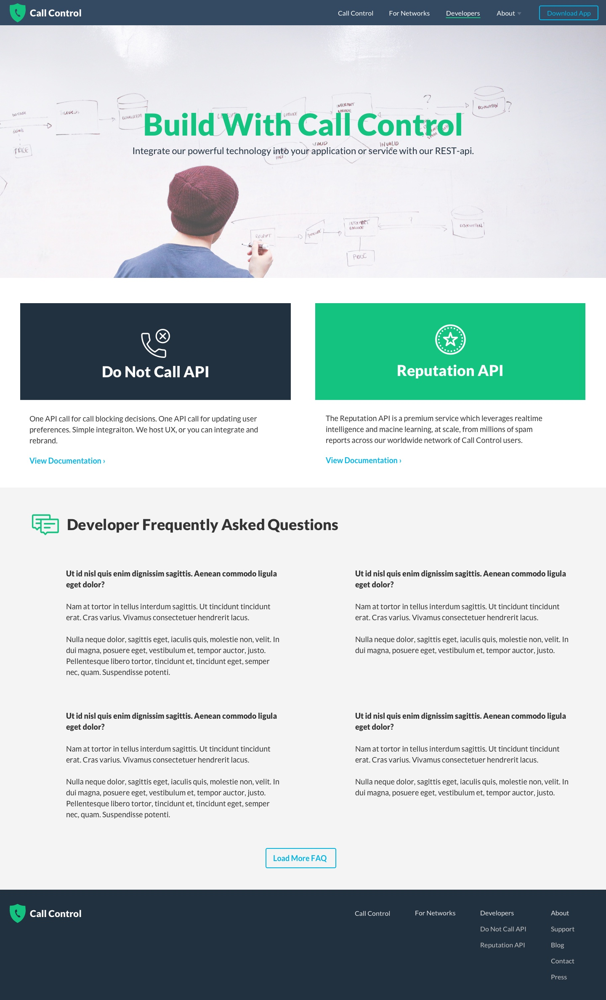

  <div class="pageWrapper workTemplate">
    <div class="pageContainer">

      {% include nav-work.html %}

      <section class="sectionWrapper">
        <div class="projectdescription">
          <h1 class="projectName">Call Control</h1>
          <h3 class="subhead">Marketing Site for Spam Blocking App</h3>
          <span class="categoryItem">UX</span> + <span class="categoryItem">Visual Design</span>
        </div>
        <div class="workIntroPara">
          <p><b>Goal:</b> Create a compelling site to increase downloads of the Callcontrol app as well as provide information for large network collaboration.</p>

          <p><b>Deliverables:</b> Sitemap, wireframes, prototype, UI comps.
        </div>
      </section>

      <section class="singlePhotoContainer">
        
      </section>

      <section class="twoPhotoContainer imageSpace">
        
        
      </section>

      <section class="copyWrapper">
        <div class="copyContainer">

          <p>Callcontrol is an app that promises to block all scammers, robocallers and telemarketers. They use a community based approach to stay on top of every new scheme scammer think up. We began work on this project by mapping out the different features and content the website should feature. From that sitemap I built a prototype with basic hierarchy and copy suggestions. During this ideation stage, we thought up Scam Alert, a feed featured prominently on their site to show just how fast Callcontrol adapts to new scam attempts.</p>

        </div>
      </section>


      <section class="singlePhotoContainer">
        
      </section>

      <section class="twoPhotoContainer imageSpace">
        
        
      </section>

      <section class="copyWrapper">
        <div class="copyContainer">

          <p>After a few rounds of revision we moved into the final visual design phase. Callcontrol wanted to showcase the power of their community approach to call blocking as well as demonstrate what they can offer in collaboration with large networks. I took a more photo heavy approach in the final UI to promote the feeling of community within the app and created a dedicated page for large network collaboration.</p>

        </div>
      </section>


      <section class="workNavigation">
        <div class="nextPrevWrapper">
          <a href="5-wireme.html"><span class="previous navBtn">Prev</span></a>
          <a href="1-circle.html"><span class="next navBtn">Next</span></a>
        </div>
        <h1 class="pageNumber ">6/6</h1>
      </section>

  </div>
</div>
